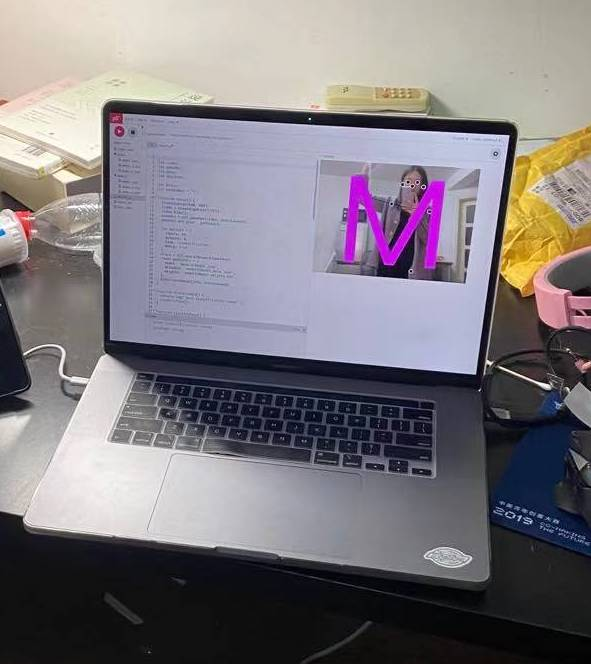
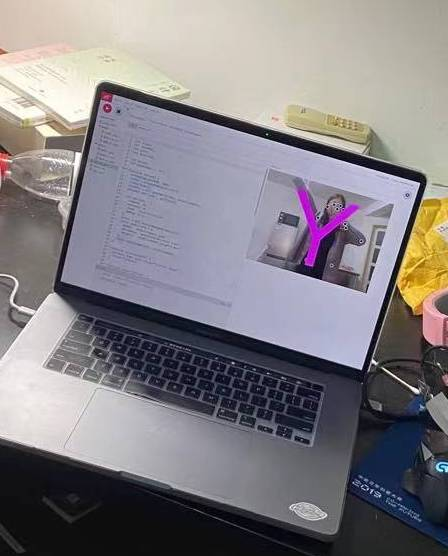

literation 1
Who are you?After the critic, I just realized instead of expect the experiencer to do something follows my imagination,I hope to use something to lead the experiencer instead of limit them. So I want to create a experience which let the experiencer to find their real shadow. By changing the light and other people's position to affect experiencers’awareness. After the digital prototype, I found out that translucent materials can be a good form to show shadows. This remind me of a kind of paper called shoji paper. I plan to do some test with it to see how it works under the real situation. Because of the setting limitation I start with a small scale prototype.
Setting:


Testing:
The material is very light-transmitting, and there are no shadows at all if there is no light on that side. I can manipulate the light to make the audience fall into the scene.
If there are more than one light sources from one side, one single person can create multiple shadows at the same time.
If the lighting from both sides and there are people in both sides the shadow can blend well together. But the requirements for lighting and position are quite high. Here is another testing with the different lighting, we can see that it doesn't work well in this setting.
Overall, the literation tests works ok for me, and looks much better than the prototype I had before.The goal here is by changing the lights and shadows to create a sense of being lost in his/her own and other people's shadow. However, there are still lots of problems need to be solve. 2.How to improve the quality of the experience can be the biggest problem.
I am stuck here right now and don't know what should I do it next....
literation 2
After talking with professor Fan, She provided me a new direction.She asked me to rethink about the Puppet.What if our movement could influence the movement of the puppets? What if the puppet not only follow one people's movement, it can be affects by different people at the same time? The puppet just like us in the society, Every day we are influenced by different people and are constantly changing ourselves to fit in the society. However, my technology skill kind of limit my creation. It is very hard for me to start in a the physical way so I start with the digital approach by using the js resources. I found out a tracking movement source which can be present in p5.jshere is the code:
https://editor.p5js.org/JINXINLI/present/HkGS8JCdw

this code can track more than 2 people's movement with the computer camera. Then how to collect the movement data and use that to manipulate some thing is very difficult for me. I try to use that data to present specified letters.Here is the code:
https://editor.p5js.org/JINXINLI/present/Zxy4xkpyV


I am not familiar with the coding, so I am stuck here as well.....
Then I did a phycial test to see what it will be look like in the perfermence.
The big shadow represent the real person, the small shadow represent the puppet. When there is only one person there, the puppet will only follow the movement of that person.
When there are more than one people trying to manipulate the puppet, the puppet will try to learn from all the people and become distorted. I want to use this kind of way to show under the conformity community we will generally lost our "shapes". These are the literations I have so far.
Go Back